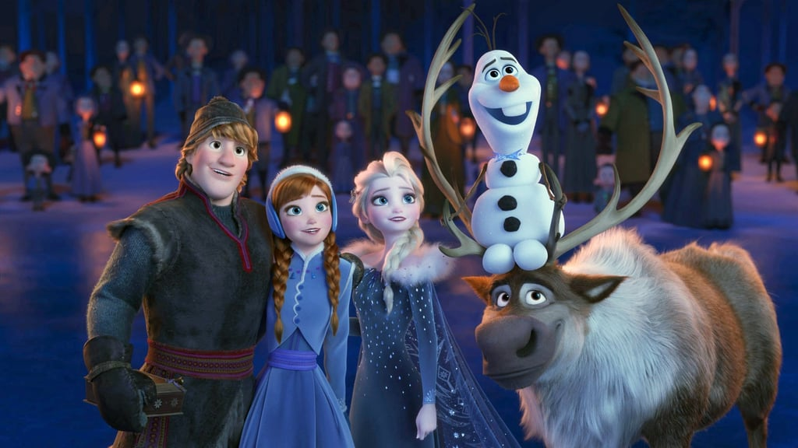

About Elsa
엘사는 월트 디즈니 애니메이션에서 만든 영화, 겨울왕궁에 나오는 캐릭터이다. 아렌델 왕궁의 왕위계승자이며, 안나의 언니로써, 얼음과 눈을 만들 수 있는 마법을 쓸 수 있다.
엘사와 친구들
Elsa's Characteristics
- 차분하고 어른스럽다.
- 자신의 능력을 두려워하며 다소 어두운 면도 있다.
- 혼자 노래를 부를 때, 완전 당당하다.
Elsa's Friends
열사에겐 동생 안나와 처남, 크리스토프와 스벤, 여름을 사랑하는 울라프가 있다.